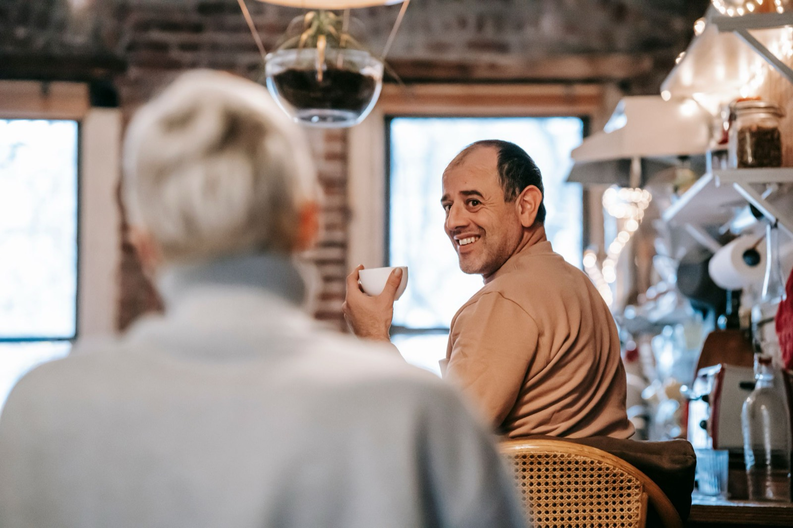
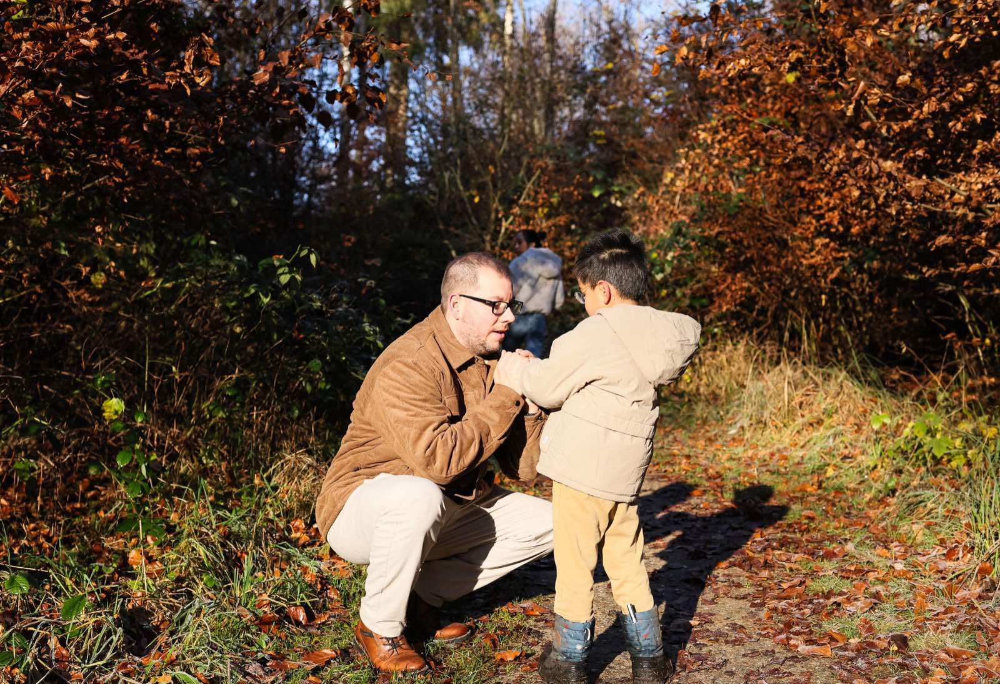
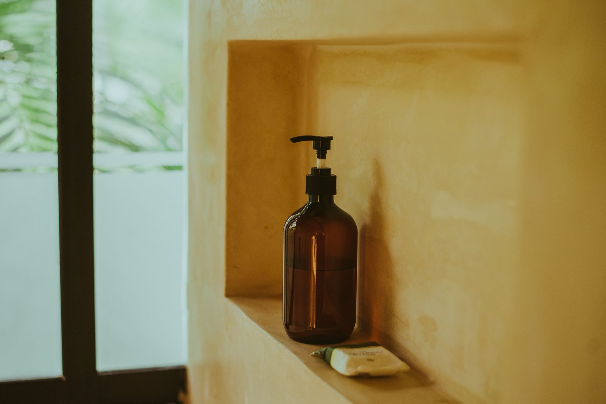

Sexual health
Nav label and category name. "Better Intimacy" is used only as the editorial hero title of the category page.
- Tadalafil
- Sildenafil
- Combo
Launch catalogue until Avi adds more. Figma: category page 2708-1034.
Positioning, the category system, the name and tagline, the two shape families and photography. This is the brand layer every website page and asset is built on.
1. Figma h7D0eRszARBaWdJT1NWrpZ (website file) wins on every visual value. 2. brand-rules.md wins on compliance and wording. 3. The hub explains and mirrors both. If the hub and Figma disagree, the hub is wrong.
One paragraph of positioning, the audience, five personality traits and the things the brand never does.
unifiedmeds is a men's health telehealth brand. It launches with Sexual health and will grow into further categories, starting with Hair loss and Longevity. A member completes an online assessment, a licensed provider reviews it and decides what happens next, and treatment arrives in closed, branded packaging. The brand speaks plainly and privately. It treats men's health as ordinary health care: no shame, no jokes, and no promises it cannot keep.
Masculine, on the gentle side. The brand has the calm of a man who knows what he wants and does not need to raise his voice. It is assured without being hard, and warm without being soft. The five traits below turn that into decisions.
| Trait | This | Not that | How it shows |
|---|---|---|---|
| Steady | Calm, even, unhurried | Stern, alarmist, urgent | Short sentences, generous whitespace, no countdowns or warning capitals. Motion confirms, it never performs. |
| Direct | Plain words, the next step stated | Blunt, clinical, euphemistic | Says what happens next and who is responsible. No innuendo, no medical jargon in headlines. |
| Warm | Respectful, kind, human first | Soft, sentimental, cute | The human sentence first, then the precise one. No emoji, no pet names, no pink theme. |
| Discreet | Private by design | Secretive, hidden costs | Privacy shows in the layout and the packaging. Process, provider and prices are open where they belong. |
| Confident | Mature, assured | Macho, boastful | Confidence comes from whitespace and specificity. No flames, wolves, "alpha", gym bodies or locker-room jokes. |
Full wording rules: Voice, content & compliance.
unifiedmeds launches with one category. Longevity and Hair loss are designed and follow right after launch (Phase 2), without a new look.
Nav label and category name. "Better Intimacy" is used only as the editorial hero title of the category page.
Launch catalogue until Avi adds more. Figma: category page 2708-1034.
Designed in Figma: category page 2076-10934, Finasteride and Hair Growth Spray product pages. Product pages carry "Legal review required" (R-87).
Designed in Figma: category page 2076-9857, NAD+ Capsules, NAD+ injection and Metformin product pages. Product pages carry "Legal review required" (R-87).
| # | Rule |
|---|---|
| 1 | One nav item. The category gets one item in the main menu, built exactly like "Sexual health ▾" (Main menu v3): a dropdown with its products and a "View all" link. The name is in sentence case. Phase 2 uses the full menu (Figma 2641:14411) with Longevity, Sexual health, Hair loss and Help. Its wording is To confirm (O-10). |
| 2 | One category page template. Every category page reuses the Sexual health category layout (Figma 2708-1034). No new section types per category. |
| 3 | One hero. One hero per category page, Hero 46/54 (--type-desktop-hero-*). It may carry an editorial title, as "Better Intimacy" does; the nav and the category label keep the plain name. |
| 4 | Core palette, plus one category colour. Every category uses the core tokens, and its category colour marks its own pages: Sexual health Deep Teal, Longevity Forest, Hair loss Sky (R-117, the same as the label grounds). No pink theme. The master brand is never recoloured. |
| 5 | Status first. A Phase 2 category never appears in the live nav before Avi approves its launch and legal approves its product pages. |
| 6 | Products for women. Some planned products serve women. They sit in the same categories and the same brand; only the photography casting changes. To confirm Which products. |
One spelling everywhere, and a tagline still to be chosen. Rule R-07, decision U-01.
All lowercase, one word: in running text, headings, legal copy and alt text, also at the start of a sentence. The legal entity name is still to confirm (O-01).
Figma copy still reads "Unifiedmeds" in places and changes to "unifiedmeds". The former brand name and its company name never appear in new material.
Six options, shown live under the lockup. Each one is checked against four tests: no benefit or medical claim; works for future categories and for women; US English; five words or fewer. "Start with answers" is retired and not offered. These six come from the earlier line bank and pass the tests for unifiedmeds. Avi chooses (O-02). The tagline's size and position in the lockup are a proposal too To confirm.
Discretion is the promise of the whole experience, and "handled" says someone qualified does the work.
Describes the format: online, at the member's own time and pace. It promises control, not an outcome.
The most concrete option. It names what is different about the service without touching outcomes.
Puts two traits side by side: a direct voice and discretion. It describes how we behave, not what treatment does.
The shortest option. A promise about tone that holds for any category and reads well on packaging.
Points at the provider review behind every plan. Warm, and still factual.
Lockup: the horizontal logo at header size (see Logo · Lockups). Tagline in Inter Regular, Body/Small 15 (--type-desktop-small-*), Slate #55747F (--color-text-secondary), aligned to the start of the wordmark.
Every graphic shape in the brand comes from the six Quadrant Kit pieces or from the capsule of the logo, and nothing else.
The capsule comes from the logo and is the second shape family. Figma "Capsule Kit" (Packaging 2678:2) has four variants. On the website it may be filled, outline or transparent, shown whole or cropped by the frame edge, and it may crop a photo. Rules R-31 to R-33, decision U-03.
Every drawn capsule has the logo's proportions. It is not symmetric: the left half is longer (55% of the length) and the right half is taller (the left half is 93.3% of its height). Standing, it is the same capsule turned 90° clockwise, long half on top. Draw it with tools/capsule_svg.py or use the files in assets/shapes/; never a rounded rectangle or a --radius-pill box with equal halves.
Shown here in website colours, stroke 0.85% of the length (D1). The exported files (Sky and Logo Blue, for dark labels) are in assets/shapes/, redrawn 17.11.2026 with the same stroke rule.
The stroke scales with the capsule (D1). An outline capsule's stroke is 0.85% of its full length, as in the seal, never less than 1.5px (--size-capsule-stroke-ratio, --size-capsule-stroke-min). At every size the capsule keeps the divider, like the seal (R-109): the long half is drawn open toward the joint, the short, taller half is closed by the divider line, and the step shows where the two heights meet. Never one continuous outline without the divider. A large capsule that needs weight takes a fill, solid or translucent, never a thicker stroke. The fixed 20px stroke (--size-capsule-stroke) is retired.
64px · stroke 1.5px · dividerTwo halves and the divider, like the seal. Stroke at the 1.5px minimum.
96px · stroke 1.5px · divider0.85% would be 0.8px, so the 1.5px minimum applies.
120px · stroke 1.5px · dividerThe same construction as the seal: divider and step. 1.5px.
240px · stroke 2px · dividerStroke 2px (0.85% of 240). The divider stays.
360px · stroke 3.1px · dividerStroke 3.1px. The divider and the step between the halves read clearly.
600px · stroke 5.1px · dividerStroke 5.1px: the page-head capsule of this hub, divider included.
Don't · 360px · fixed 20px strokeA thick fixed stroke swallows the 7px step between the halves: the capsule reads as a symmetric pill.
Drawn by tools/capsule_svg.py (stroke_for(), capsule_paths(), svg_outline()). The stroke follows the length as rendered: a capsule scaled down on a phone keeps its proportion, and below 176px long the 1.5px minimum takes over.
| Capsule | Desktop | Mobile (390) |
|---|---|---|
| Page-head outline (this hub) | 600 long, stroke 5.1, divider | Hidden under 1280 |
| Band, standing outline | 346 long, stroke 2.9, divider | Same size and stroke, under the copy |
| Band, standing filled | 250 long, no stroke | Hidden |
| Website hero outline (Figma 600 × 260) | 600 long, stroke 5.1, divider | Scaled with the frame: 350 long, stroke 3, divider |
| Loader | 72 long, divider, 1.5 | Same |
| Logo icon stamp (u|m) on a photo | 48 long | 40 long, never smaller |
The 600px hero capsule on a 390 screen: 350 long, stroke 3px, divider and step kept. Same shape, same proportion.
From the Figma homepage: a large outline capsule in Wash Blue at 70%, cropped by the section edge. Its stroke is 0.85% of its length (D1), not the 20px Figma draws. In dark sections it stands up vertically. Filled capsules sit at 50%. The same pattern runs across this hub, always in the logo's proportions.
In this hub: page head, 600px outline, stroke 5.1, desktop only (hidden under 1280px). Band, 346px standing outline (stroke 2.9) and 250px filled capsule on desktop; on mobile only the outline, under the copy, cropped by the right and bottom edges, the filled one hidden.
| Colour | Token | Where |
|---|---|---|
| Deep Teal #264653 | --color-brand-deep-teal | Website |
| Blue #6E8B97 | --color-brand-blue | Website |
| Blue-dark #4E6873 | --color-brand-blue-dark | Website |
| Green #6A8670 | --color-brand-green | Website |
| Yellow #FFBE0B | --color-brand-yellow | Website; one Yellow element per viewport |
| Wash Blue #A8BEC7 | --color-surface-wash-blue | Website |
| Product colours | --color-product-* | Capsules on labels and packaging (R-85, R-89) |
| Clay #CFC6B8 | --color-brand-clay | Posters only |
Logo colours (Navy, Ink, Sky, Logo Blue, Cream) are never used for shapes on the website (R-84).
Up to two shapes a fold, and a shape may cross into the next (D4). Each fold carries at most two shapes (R-106): the capsule in its true shape or Quadrant Kit pieces, outline or translucent fill, at --opacity-capsule or --opacity-capsule-soft, never under text. A shape may straddle the boundary between two folds; it counts once in each and carries the eye down the page. Optional scroll motion: the shape drifts at most 24px (--motion-distance-drift) or turns at most 6° (--motion-drift-rotate) across the fold's scroll, or draws its outline once. Only shapes move, never text. Reduced motion: the shape rests at its end state.
Copy keeps to the clean side. The capsule starts here.
The same capsule continues here and counts once in each fold.
Copy keeps to the clean side. The capsule starts here.
The same capsule continues here and counts once in each fold.
A section may add one brand accent (D8). Green or Blue, through an icon, an eyebrow mark, a rule or a low-opacity shape of the same hue. One accent per section, never both. Yellow stays the single result moment. Text keeps its own colours: Green and Blue fall under 4.5:1 on Paper, so they mark, they never carry small text.
Green icon, Green eyebrow mark, Green Quarter at 50%.
Blue icon, Blue eyebrow mark and a Blue Quarter at 50%.
Green icon, Yellow mark, Blue shape.
Mobile: the same section stacks; the shape keeps its corner and shrinks with the card, the icon stays 40px.
The piece arrives, then stays still.
--motion-duration-shape 520 ms, --motion-easing-enter, no fade. Plays once; with reduced motion it appears in place. Full set on Motion.
Real people in real places, in natural light. Nothing clinical, nothing staged for effect.
alt="" only when the photo is purely decorative.There is no scrim token in tokens/tokens.json, so no Deep Teal overlay is used. Choose or crop photos with a calm area for copy, or set the copy beside the photo. Buttons on photos use Outline Light, which fills Blue-dark #4E6873 on hover (.btn--outline-light.btn--on-photo).
Outline plus a translucent long half (D2). On a photo the capsule is an outline with the D1 stroke, Paper on dark or busy photos and Deep Teal on light ones, and its long half is filled translucent (Paper or Wash Blue at --opacity-capsule-soft), like the filled half of the seal. It enters from a frame edge or corner, cropped by it, toward the subject. Never an opaque fill over a face, never over eyes or mouth, never under text. At most two shapes per photo, the stamp included. The logo icon, the u|m mark of the app icon without its tile (assets/shapes/logo-stamp-paper.svg, logo-stamp-teal.svg), may sit as a stamp in a photo corner: 48px long on desktop, 40 on mobile and never smaller, 16px from the edges, Paper on dark or busy photos and Deep Teal on light ones. In exported images (media kit, social) it is 12% of the image's short side.



Until real photography exists, use a Mist frame labelled "IMAGE · <what>" at the frame's real ratio. Never use a watermarked stock photo as a stand-in. The ratios below follow the Figma category page frames: 520×420, 440×460 and 548×300.

Stand-in photos (17.11.2026): free licence, not approved, shown so the frames carry the intended light, colour and mood. The label under each frame stays the brief for the real photo; the bottle stand-in is a generic amber bottle, not ours. Credits: assets/photos/CREDITS.md.